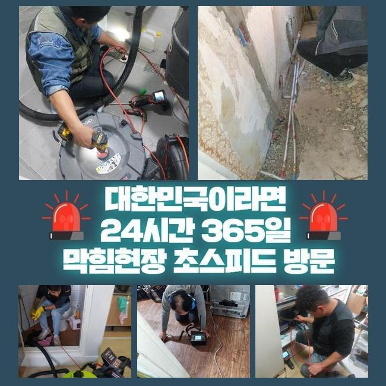
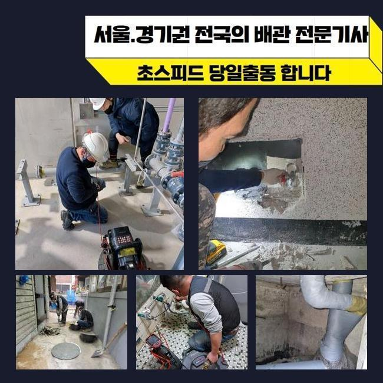
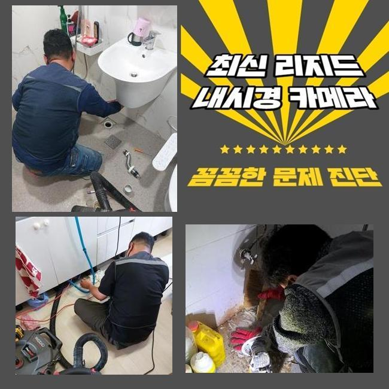
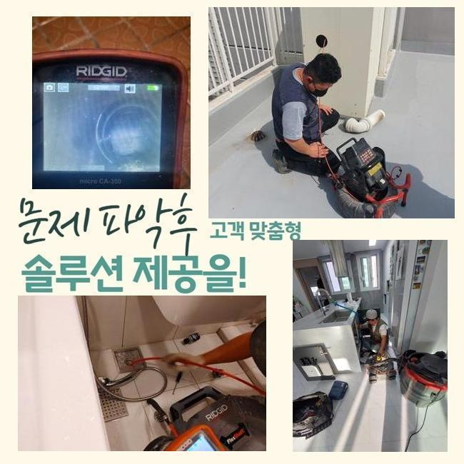
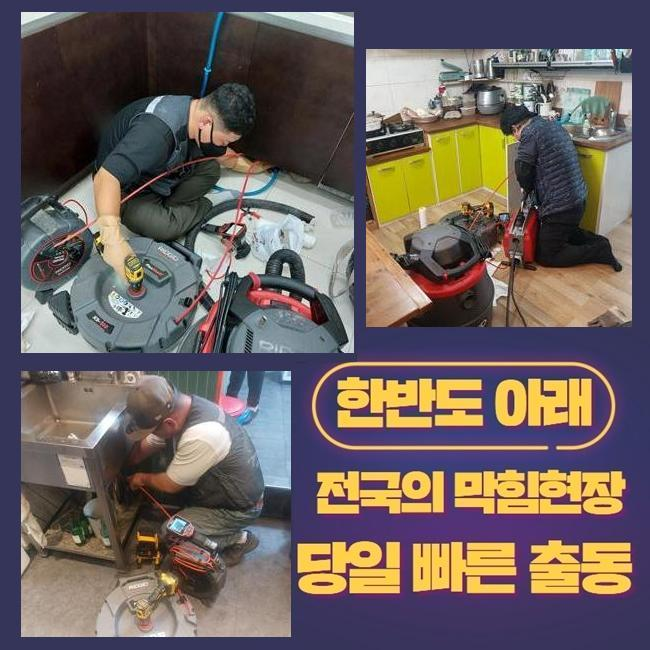
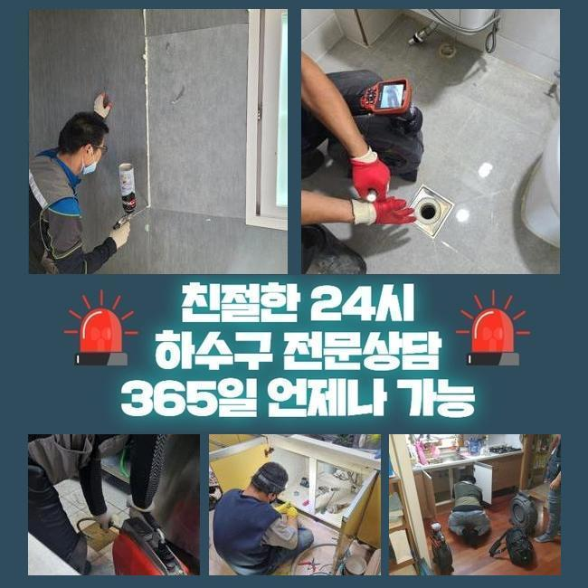
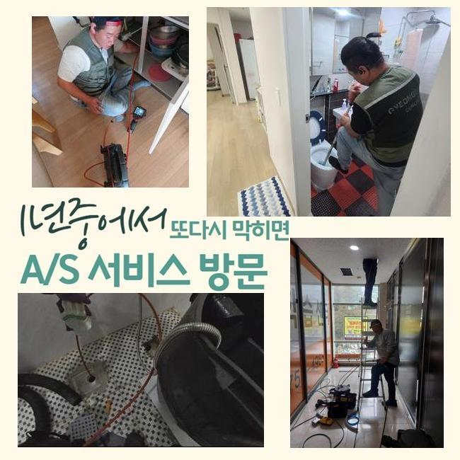

🏠 중구 하수구내시경 용산구 욕조막힘
용인 하수구막힘 전문 시공 후기

📋 작업 개요
- 위치: 용인
- 서비스 유형: 하수구막힘, 배관막힘, 역류해결, 뚫는업체, 배관청소, 고압세척, 악취차단
- 작업 일시: 2024. 12. 14. 2:27
- 업체명: 하수구수사대 (010-5615-2118)
🔍 문제 상황
중구 하수구내시경 용산구 욕조막힘
아파트 배관이 막히면 여러 사람들이 겪는 불편함은 말로는 다할 수 없을 정도죠
원활하게 작동하던 하수구가 갑작스레 망가지기도 하지만 동시에 역류 현상이 존재감을 드러내기도 해요
이런 어려움이 나타나기 전 예방차원으로 하수관을 쉽게 정리하는 방식도 있으니 공유해드린 조언을 들으셔서 계신 공간 안도 집중조명해 보시기 바랍니다
물을 못쓰게 만드는 하수관 중단을 얼른 극복하도록 도와달라는 연락이 와서 마침 시간이 남아서 현장으로 향하게 되었습니다
하수관의 물이 오래 빠지지 못하면 혼탁한 하수가 밑에서 올라오다보니 생김새가 다양한 오염원이 산재하게 되고 극심한 하수구 냄새도 내부 공간에 확산됩니다
쉬어야 할 공간이 더러워지니까 어찌할 바를 모르셨던 의뢰인분이 황급히 저희를 찾아주신 것입니다
집의 하수구가 마비된다면 고객님 선에서 노력하여 통로를 확보하려고 해보시는데요
가볍게만 틀어막혔다면 대야에 수돗물을 담아서 붓거나 소비자도 쉽게 쓸 수 있는 뚫는 핸디 기기나 유액 클리너를 써서 내부정화를 하기도 합니다
비지땀을 흘리면서 물길을 개방했다고 해도 조만간 또 막힘이 생겨서 괜히 시간만 버리게 됩니다
이런 일이 닥치면 막막할 듯 하시면 저희 글을 참고하시고 모든 하수구에 능숙한 업체를 물색하셔서 풀어보시는 것을 권유 드리는 바입니다!

🔎 원인 분석
💡 전문가 진단: 정밀 진단 장비를 사용하여 슬러지의 고착 여부를 판명하고 타격/세척 작업을 실시했습니다.
작업지 도착 이후에 보니 배관 내부의 물 역류도 계속해서 일어나는 중이었어요
이렇게 부패된 하수가 올라오면 구린내고 진동을 할 것이고 증식했던 세균도 영향을 주니 얼른 처리를 해주셔야 합니다
지난 경험을 말씀해주셨는데 정기적으로 배관 점검을 들어갔었지만 잦은 막힘과 범람이 잇따라 터졌다고 하셨습니다
한 세대를 넘어서 여러 세대에 걸쳐 비슷한 장애를 겪는다면 공유하는 메인배관에 불편한 이상 현상이 생긴 현장일 수 있음을 아셔야해요
특정 호실에서 정비를 해줘도 장기적으로 낫지는 않기때문에 본격적인 건물 설비에 대한 세밀한 스캔이 필수입니다
주기적인 정비 날짜를 정해두고 미리미리 무결점의 하수구가 유지되는지 살펴보는 노력이 필요해요
하수구가 고장나는 사태를 탈바꿈 시켜주려는 목적으로 속이 보이게 해주는 내시경으로 현황 판단을 해보기로 했습니다
야외 시설물로 향하는 배관쪽의 결함이라는 것을 눈치채고는 메인 배관의 입구를 열어봐야겠다고 결심이 내려졌어요
배관 커버를 탈거해보니 상당량의 오물이 누적되어 있었고 입출구부터 흐름이 차단돼서 물이 정상 배출되지 못했다는 진상을 이해하게 됐습니다
깊숙한 곳에서 막힘이 생기면 도달하는 것도 무리가 있으니 홀로 해결을 해보시는 것은 부정성이 더 강해요
분명 가벼운 사안이 아니므로 애초에 전문업체에 의뢰하는 게 건물의 안전성을 위해서라도 훨씬 옳은 결정입니다

🔧 작업 과정
먼저 메인관로 내부의 장애요인을 없애고자 배수구 석션기를 설치해서 우선적으로 걸리는 오염원 밖으로 추출하는 업무를 했습니다
이러한 활동을 통해서 내부에 차오른 이물들을 많은 비중 처리할 수 있어요
석션기계는 쉽게 말해 일반 청소기와 유사한 속성을 보유한 기계다보니 말끔하게 청소를 해주는거죠
배관용으로 나온 장비로 머무른 장애물들을 모두 거둬들여야만 머지않은 미래에 또다시 물이 멈추는 난감한 상황들을 원천차단할 수 있습니다
물에 떠다니는 찌꺼기을 제거하고 재조사를 하고자 내시경 기구를 투여해서 근황이 어떤지 봐줬습니다
거대하게 확장됐던 오염원들이 사라졌다는 흔적을 발견했고 통로가 쾌적하게 트인 점 역시 감지할 수 있었네요
석션작동으로 큰 오물들은 없앴지만 미처 처리가 되지 못한 파편화가 된 더러운 물질까지도 무결점으로 삭제시키려면 하수관의 강력한 고압세척 단계가 들어가야 합니다
이 방식도 설명을 드리면 센 압력의 물대포로 관로 표면에 달라붙은 오염된 물질들을 없애서 청결하게 만드는 일입니다
가벼운 막힘사안에 쓰기에는 과잉일 수 있겠지만 메인 배관에 활용하기에 딱 적합한 특화된 장비로 애용하고 있습니다
전화주신 고객님의 이곳은 굵은 핵심 배관과 집과 연결되는 잔배관까지 세월의 흐름이 녹아있었기에 데미지가 있지 않도록 적절한 세기로 조절해가면서 관로 세척을 담당해 드렸어요
만족할 때까지 지속적으로 세정을 반복시공하면서 오물들을 모두 긁어내주었습니다
집중한 끝에 내시경으로 마감이 가능할지 체크했는데 장애물 하나 없이 맑아진 관로의 현재 모습이 목격되어 저또한 매우 흡족한 결과였어요
손대는 영역을 이왕이면 소규모로 설정하는 게 편하실테니 관로탐지기 및 도구들을 독창적으로 이용하고 있답니다
현장에 깔린 배관의 종류나 사이즈별로 시행 방식이 달라질 수 있는 부분인데 옳지 않은 방법으로 청소를 하면 배관이 파손되어 새 부품으로 교환하게 되면 비용이 배로 다가옵니다
좋은 결과를 보려면 깊은 노하우를 보유한 업체를 고르시는 것이 가장 중요합니다
설치된 하수구는 보기보다 심층적인 영역이며 나뭇가지가 퍼진 듯한 구조를 띄고 있기 때문에 숙련도가 뛰어나야 손쉽게 상황을 개선할 수 있습니다
일부 배관의 구간만을 말끔하게 완수한다고 전체 배수관로의 성능이 회복되지 않을 뿐더러 문제의 재발까지 빈번하게 생성되고 맙니다


✅ 작업 완료
능숙하지 못한 업체와의 계약을 하게 되어버리면 배관의 청소를 했는데도 재차 중단건이 찾아와서 다른 시공을 요청해야만 하는 또 다른 과제가 생기고 커다란 손실을 입게 됩니다
사태가 터져버리기 전에 방지를 해줄 수 있는 방식도 있는데 이를 넌지시 알려드릴게요
수기로 치우거나 하수구용 세제를 투여하거나 모발을 걸러주는 필터를 설치하는 방법도 있답니다
수돗물을 뜨겁게 공급받아서 흘려보내고 거름망을 상단에 다는 법도 있는데 이 모든 해결책들을 빠짐 없이 이행 했는데도 배수관이 말썽이라면 전문업체의 도움이 절실한 것입니다!
하수구가 제기능을 잃어버려서 심적 고통이 있으시다면 시간 상관없이 연락주시면 아무런 거리낌 없이 수선을 해드리겠습니다




⚠️ 하수구 배관 막힘 예방 및 관리 가이드
- ✅ 머리카락, 비닐, 물티슈 등 물에 분해되지 않는 이물질은 하수구 유입을 절대 금지해 주세요.
- ✅ 하수구 거름망을 씌우고 모여진 이물질은 주기적으로 쓰레기통에 바로 비워주셔야 합니다.
- ✅ 배관 노후가 심할 경우 이물질이 더 쉽게 걸리므로 주기적인 배관 세척(고압세척 등)을 권장합니다.
- ✅ 작업 후 1년 이내 재발 시 하수구수사대에서 무상 A/S 보증 서비스를 제공합니다.
💡 핵심 정리
- 확실한 장비 작업(내시경 점검 및 샤프트 스케일링)으로 원인을 뿌리 뽑습니다.
- 작업 후 1년 이내에 동일한 부위 재발 시 100% 무상 A/S 서비스를 보장합니다.
- 서울 · 경기 · 인천 전 지역에 24시간 언제든 긴급 출동할 수 있도록 항시 대기 중입니다.
❓ 자주 묻는 질문 (FAQ)
🚨 용인 하수구막힘 문제로 고민이신가요?
정확한 원인 진단과 확실한 시공으로 재발 없는 해결을 약속드립니다.
24시간 긴급 출동 | 서울 · 경기 · 인천 전지역 | 1년 내 재발 시 무상 A/S